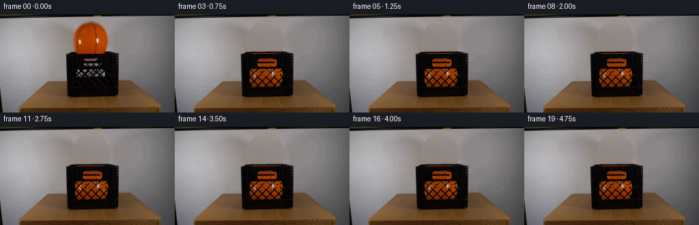
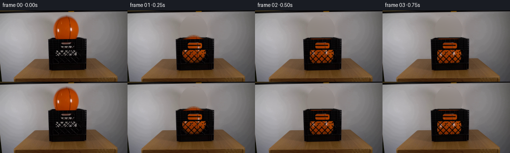
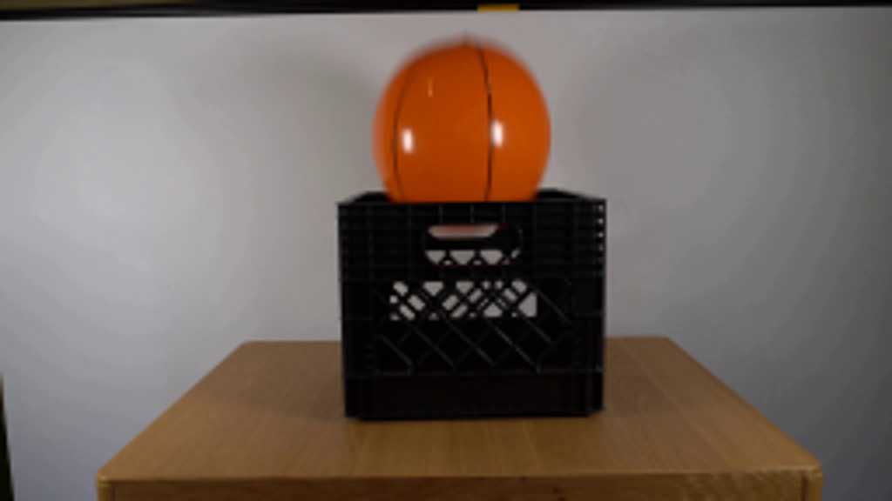
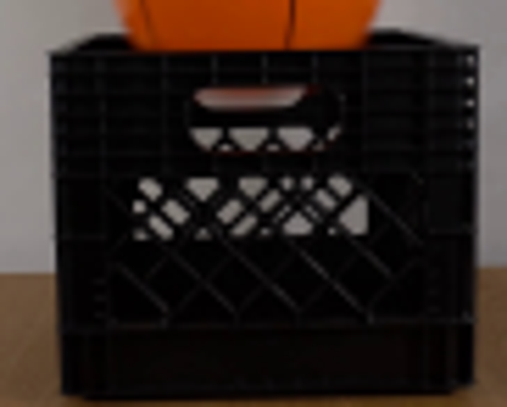
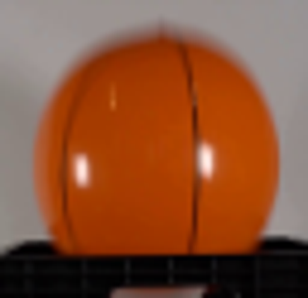
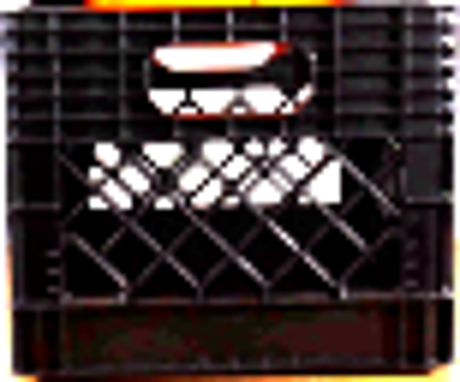
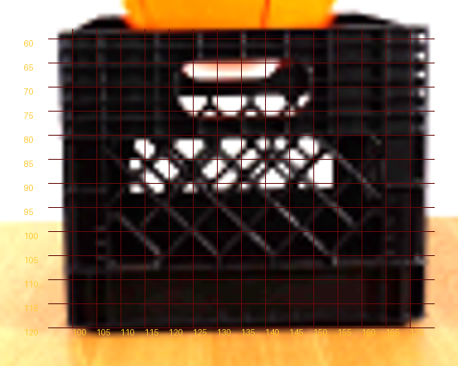
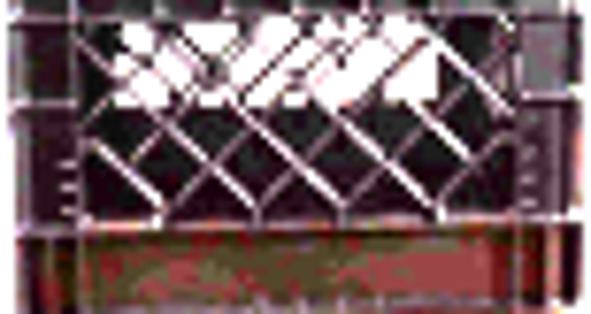

CODING AGENTS AS PIXEL WORLD MODELS
traex/GPT-6.1-Sol · 0014
点击播放 · 原生 RGB 像素
此结果可播放，但该运行尚未通过最终提交审核。页面展示不代表评测通过。
逐轮保存的候选
回放视频、检查图与代码变化。
每份候选均可单独播放。实际图片检查记录在下方工具轨迹中。
候选 01播放与检查图
点击播放 · 原生 RGB 像素


展开代码变化
--- 上一保存版本
+++ 本次保存版本
@@ -0,0 +1,147 @@
+from pathlib import Path
+import numpy as np
+from PIL import Image, ImageDraw, ImageFilter
+import cv2
+from scipy.ndimage import map_coordinates, gaussian_filter
+from artifact_io import save
+
+ROOT=Path(__file__).resolve().parent
+W,H=256,144
+im=np.asarray(Image.open(ROOT/'first_frame.png').convert('RGB')).copy()
+yy,xx=np.mgrid[:H,:W].astype(float)
+cx0,cy0=132.35,39.35
+rx,ry=25.65,27.65
+
+# Recover the stationary wall behind the initially visible sphere.
+bg=im.astype(float).copy()
+r=((xx-cx0)/rx)**2+((yy-cy0)/ry)**2
+rem=(r<1.19)&(yy<58)&(xx>103)&(xx<162)
+region=(xx>77)&(xx<194)&(yy>6)&(yy<70)
+valid=region&(~rem)&~((yy>=52)&(xx>94)&(xx<177))
+x=(xx-cx0)/60;y=(yy-35)/45
+terms=np.stack([np.ones_like(x),x,y,x*x,x*y,y*y,x*x*x,x*x*y,x*y*y,y*y*y],-1)
+for c in range(3):
+ coef=np.linalg.lstsq(terms[valid],im[:,:,c][valid],rcond=None)[0]
+ pred=terms@coef
+ bg[:,:,c][rem]=pred[rem]
+# Fixed top rim: the edge that was obscured by the ball in the initial view.
+S=4
+rim=Image.new('RGBA',(W*S,H*S),(0,0,0,0)); d=ImageDraw.Draw(rim)
+def poly(points,fill):d.polygon([(int(a*S),int(b*S)) for a,b in points],fill=fill)
+poly([(107,56.8),(111,54.8),(157.8,54.3),(162.1,56.8)],(12,12,12,255))
+d.line([(110*S,55*S),(157*S,54.6*S),(162*S,56*S)],fill=(27,27,26,255),width=3)
+ri=np.asarray(rim.resize((W,H),Image.Resampling.LANCZOS)).astype(float)
+bg=bg*(1-ri[:,:,3:]/255)+ri[:,:,:3]*ri[:,:,3:]/255
+# Original front face remains locked in place. Only its apertures reveal the ball.
+front=im.astype(float).copy()
+# Neutralize the original orange cast in the handle aperture.
+for py in range(65,70):
+ for px in range(119,149):
+ if front[py,px,0]>front[py,px,1]*1.13 and front[py,px,0]>35:
+ v=(front[py,px,1]+front[py,px,2])*.5
+ front[py,px]=[v*1.02,v,v*.99]
+
+# Physical front lattice apertures, at fourfold resolution for subpixel wires.
+ap=Image.new('L',(W*S,H*S),0); a=ImageDraw.Draw(ap)
+def ppoly(points,value):a.polygon([(int(p*S),int(q*S)) for p,q in points],fill=value)
+ppoly([(110.6,80.1),(157.1,79.6),(160.1,105.5),(109.8,106.8)],255)
+# The two crossing families of moulded lattice ribs.
+for k in [-37,-25,-13,-1,11,23,35,47,59,71,83]:
+ # x=111+k+(y-80)
+ a.line([(int((111+k-1)*S),79*S),(int((111+k+28)*S),108*S)],fill=0,width=round(1.65*S))
+ a.line([(int((111+k+1)*S),79*S),(int((111+k-28)*S),108*S)],fill=0,width=round(1.65*S))
+# Front handle: the actual slot is seen through the near wall.
+a.rounded_rectangle((121*S,65.8*S,149.2*S,76.6*S),radius=3.0*S,fill=255)
+# Preserve the dark grip surrounding the handle, including central bridge.
+a.polygon([(121*S,69.6*S),(146.7*S,69.6*S),(146.7*S,71.7*S),(120.7*S,71.7*S)],fill=0)
+# Actual bright cutouts are taken directly from the observed lattice. This
+# retains the original silhouette at the most conspicuous triangular openings.
+mask=np.asarray(ap.resize((W,H),Image.Resampling.LANCZOS)).astype(float)/255
+origbright=np.mean(im,axis=2)
+# Keep clear foreground bars where the initial grid is unambiguously visible.
+for py in range(80,93):
+ for px in range(110,160):
+ if origbright[py,px]>48:
+ mask[py,px]=max(mask[py,px],np.clip((origbright[py,px]-22)/70,0,1))
+mask=np.clip(mask,0,1)
+# Foreground crate occlusion, including the left/right outer silhouette.
+occ=np.zeros((H,W),float)
+occ[58:120,98:173]=1
+occ[58:120,97]=.55
+occ[58:120,173]=.6
+occ[57,99:172]=.8
+occ*=1-mask
+
+# A photometric sphere texture from the single provided observation. Its small
+# hidden lower cap is completed with the same smooth material and seam curves.
+N=256
+v,u=np.mgrid[:N,:N].astype(float)
+u=(u-(N-1)/2)/((N-1)/2);v=(v-(N-1)/2)/((N-1)/2)
+z=np.sqrt(np.maximum(0,1-u*u-v*v))
+sx=cx0+rx*u;sy=cy0+ry*v
+tex=np.stack([map_coordinates(im[:,:,c].astype(float),[np.minimum(sy,55.5),sx],order=1,mode='nearest') for c in range(3)],-1)
+# Smooth orange cap continuation, matching its illumination and black seams.
+shade=np.clip(.66+.28*z-.045*u-.075*v,.4,1)
+cap=np.stack([180*shade,70*shade,8*shade],-1)
+left=-.80*np.sqrt(np.maximum(0,1-v*v))+.028*v
+right=.355*np.sqrt(np.maximum(0,1-v*v))+.060*v
+seam=np.maximum(np.exp(-((u-left)/.024)**2),np.exp(-((u-right)/.022)**2))
+cap=cap*(1-.73*seam[:,:,None])
+blend=np.clip((sy-54)/4,0,1)
+tex=tex*(1-blend[:,:,None])+cap*blend[:,:,None]
+# Source boundaries contain wall/rim pixels; avoid transporting those pixels.
+edge=(u*u+v*v)>.91
+tex[edge]=cap[edge]
+alpha=np.clip((1-np.sqrt(u*u+v*v))*N/2,0,1)
+# The dynamics are a gravity-driven drop followed by small, damped rebounds.
+g=1250.0; floor_center=87.9
+fall_t=np.sqrt(2*(floor_center-cy0)/g)
+impact=np.sqrt(2*g*(floor_center-cy0))
+def height(t):
+ if t<fall_t:return cy0+.5*g*t*t
+ t-=fall_t
+ vel=impact*.43
+ for j in range(9):
+ dur=2*vel/g
+ if t<dur:return floor_center-vel*t+.5*g*t*t
+ t-=dur;vel*=.43
+ return floor_center
+
+def render(t):
+ cy=height(t)
+ # slight, damped settling against the inside of the crate, not lateral escape
+ dx=0 if t<fall_t else .65*(1-np.exp(-(t-fall_t)*3))
+ cx=cx0+dx
+ syf=(yy-cy)/ry
+ sxf=(xx-cx)/rx
+ # Very modest rotation as the ball touches the inner bottom.
+ ang=0 if t<fall_t else .018*(1-np.exp(-(t-fall_t)*4))
+ ut=sxf*np.cos(ang)+syf*np.sin(ang)
+ vt=-sxf*np.sin(ang)+syf*np.cos(ang)
+ tx=(ut+1)*(N-1)/2;ty=(vt+1)*(N-1)/2
+ ba=map_coordinates(alpha,[ty,tx],order=1,mode='constant',cval=0)
+ ball=np.stack([map_coordinates(tex[:,:,c],[ty,tx],order=1,mode='nearest') for c in range(3)],-1)
+ # Dim light within the crate rather than adding an artificial glow.
+ depth=np.clip((yy-59)/53,0,1)
+ ball*= (1-.20*depth)[:,:,None]
+ comp=bg*(1-ba[:,:,None])+ball*ba[:,:,None]
+ # Leave aperture background entirely unchanged where there is no sphere.
+ # The original face is the front layer; all fixed ribs retain their texture.
+ bvis=ba*(1-occ)
+ cover=(yy>=57)&(xx>=97)&(xx<=174)&(yy<=120)
+ out=comp.copy()
+ out[cover]=front[cover]*(1-bvis[cover,None])+ball[cover]*bvis[cover,None]
+ # where ball is above the crate, background + ball was already composited
+ return np.clip(out,0,255).astype(np.uint8)
+
+frames=[im]
+for i in range(1,20):
+ t=i/4
+ # A short camera exposure, keeping constant frame cadence and slight motion blur.
+ acc=np.zeros((H,W,3),float)
+ for dt in [-.008,-.004,0,.004,.008]: acc+=render(t+dt).astype(float)/5
+ frames.append(np.round(acc).astype(np.uint8))
+frames=np.stack(frames)
+save(frames,ROOT)
+if __name__=='__main__':
+ print('Saved',frames.shape,'RGB frames')
可观测工具轨迹
实际执行的命令与返回图片。
命令 1exit 0
/bin/bash -lc 'ls -la && cat prompt.txt && cat GENERATION_RULES.md'
命令 2exit 0
/bin/bash -lc "cat artifact_io.py && python - <<'PY'
from PIL import Image
im=Image.open('first_frame.png'); im.resize((1024,576)).save('.tmp/up.png')
PY"命令 3exit 0
/bin/bash -lc "python - <<'PY'
import importlib.util
for x in ['numpy','scipy','cv2','PIL']:
print(x, bool(importlib.util.find_spec(x)))
from PIL import Image
im=Image.open('first_frame.png'); im.crop((88,49,179,122)).resize((728,584)).save('.tmp/crate.png')
PY"命令 4exit 0
/bin/bash -lc "python - <<'PY'
import numpy as np
from PIL import Image
im=np.array(Image.open('first_frame.png'))
m=(im[:,:,0]>im[:,:,1]*1.3)&(im[:,:,0]>100)&(im[:,:,1]<140)
for y in range(10,61,2):
xs=np.where(m[y])[0]; xs=xs[(xs>90)&(xs<175)]
print(y,(xs.min(),xs.max()) if len(xs) else None)
Image.open('first_frame.png').crop((100,5,164,67)).resize((512,496)).save('.tmp/ball.png')
PY"命令 5exit 0
/bin/bash -lc "python - <<'PY'
from PIL import Image,ImageEnhance
im=Image.open('first_frame.png')
im=im.crop((97,57,174,121)); im=ImageEnhance.Brightness(im).enhance(5); im=ImageEnhance.Contrast(im).enhance(1.25); im.resize((770,640)).save('.tmp/cratebright.png')
PY"命令 6exit 0
/bin/bash -lc "python - <<'PY'
from PIL import Image,ImageDraw,ImageEnhance
im=Image.open('first_frame.png'); im=ImageEnhance.Brightness(im).enhance(3); im=im.resize((1536,864)); d=ImageDraw.Draw(im)
for x in range(100,175,5):
d.line((x*6,58*6,x*6,120*6), fill=(100,10,10),width=1);d.text((x*6,120*6),str(x),fill=(255,200,50))
for y in range(60,121,5):
d.line((95*6,y*6,175*6,y*6), fill=(100,10,10),width=1);d.text((90*6,y*6),str(y),fill=(255,200,50))
im.crop((85*6,52*6,180*6,128*6)).save('.tmp/grid.png')
PY"命令 7exit 0
/bin/bash -lc "python - <<'PY'
from PIL import Image, ImageEnhance
im=Image.open('first_frame.png'); im=im.crop((97,78,174,119));im=ImageEnhance.Brightness(im).enhance(14); im.resize((1078,574)).save('.tmp/lower.png')
PY"命令 8exit 0
/bin/bash -lc "cat > generate.py <<'PY'
from pathlib import Path
import numpy as np
from PIL import Image, ImageDraw, ImageFilter
import cv2
from scipy.ndimage import map_coordinates, gaussian_filter
from artifact_io import save
ROOT=Path(__file__).resolve().parent
W,H=256,144
im=np.asarray(Image.open(ROOT/'first_frame.png').convert('RGB')).copy()
yy,xx=np.mgrid[:H,:W].astype(float)
cx0,cy0=132.35,39.35
rx,ry=25.65,27.65
# Recover the stationary wall behind the initially visible sphere.
bg=im.astype(float).copy()
r=((xx-cx0)/rx)**2+((yy-cy0)/ry)**2
rem=(r<1.19)&(yy<58)&(xx>103)&(xx<162)
region=(xx>77)&(xx<194)&(yy>6)&(yy<70)
valid=region&(~rem)&~((yy>=52)&(xx>94)&(xx<177))
x=(xx-cx0)/60;y=(yy-35)/45
terms=np.stack([np.ones_like(x),x,y,x*x,x*y,y*y,x*x*x,x*x*y,x*y*y,y*y*y],-1)
for c in range(3):
coef=np.linalg.lstsq(terms[valid],im[:,:,c][valid],rcond=None)[0]
pred=terms@coef
bg[:,:,c][rem]=pred[rem]
# Fixed top rim: the edge that was obscured by the ball in the initial view.
S=4
rim=Image.new('RGBA',(W*S,H*S),(0,0,0,0)); d=ImageDraw.Draw(rim)
def poly(points,fill):d.polygon([(int(a*S),int(b*S)) for a,b in points],fill=fill)
poly([(107,56.8),(111,54.8),(157.8,54.3),(162.1,56.8)],(12,12,12,255))
d.line([(110*S,55*S),(157*S,54.6*S),(162*S,56*S)],fill=(27,27,26,255),width=3)
ri=np.asarray(rim.resize((W,H),Image.Resampling.LANCZOS)).astype(float)
bg=bg*(1-ri[:,:,3:]/255)+ri[:,:,:3]*ri[:,:,3:]/255
# Original front face remains locked in place. Only its apertures reveal the ball.
front=im.astype(float).copy()
# Neutralize the original orange cast in the handle aperture.
for py in range(65,70):
for px in range(119,149):
if front[py,px,0]>front[py,px,1]*1.13 and front[py,px,0]>35:
v=(front[py,px,1]+front[py,px,2])*.5
front[py,px]=[v*1.02,v,v*.99]
# Physical front lattice apertures, at fourfold resolution for subpixel wires.
ap=Image.new('L',(W*S,H*S),0); a=ImageDraw.Draw(ap)
def ppoly(points,value):a.polygon([(int(p*S),int(q*S)) for p,q in points],fill=value)
ppoly([(110.6,80.1),(157.1,79.6),(160.1,105.5),(109.8,106.8)],255)
# The two crossing families of moulded lattice ribs.
for k in [-37,-25,-13,-1,11,23,35,47,59,71,83]:
# x=111+k+(y-80)
a.line([(int((111+k-1)*S),79*S),(int((111+k+28)*S),108*S)],fill=0,width=round(1.65*S))
a.line([(int((111+k+1)*S),79*S),(int((111+k-28)*S),108*S)],fill=0,width=round(1.65*S))
# Front handle: the actual slot is seen through the near wall.
a.rounded_rectangle((121*S,65.8*S,149.2*S,76.6*S),radius=3.0*S,fill=255)
# Preserve the dark grip surrounding the handle, including central bridge.
a.polygon([(121*S,69.6*S),(146.7*S,69.6*S),(146.7*S,71.7*S),(120.7*S,71.7*S)],fill=0)
# Actual bright cutouts are taken directly from the observed lattice. This
# retains the original silhouette at the most conspicuous triangular openings.
mask=np.asarray(ap.resize((W,H),Image.Resampling.LANCZOS)).astype(float)/255
origbright=np.mean(im,axis=2)
# Keep clear foreground bars where the initial grid is unambiguously visible.
for py in range(80,93):
for px in range(110,160):
if origbright[py,px]>48:
mask[py,px]=max(mask[py,px],np.clip((origbright[py,px]-22)/70,0,1))
mask=np.clip(mask,0,1)
# Foreground crate occlusion, including the left/right outer silhouette.
occ=np.zeros((H,W),float)
occ[58:120,98:173]=1
occ[58:120,97]=.55
occ[58:120,173]=.6
occ[57,99:172]=.8
occ*=1-mask
# A photometric sphere texture from the single provided observation. Its small
# hidden lower cap is completed with the same smooth material and seam curves.
N=256
v,u=np.mgrid[:N,:N].astype(float)
u=(u-(N-1)/2)/((N-1)/2);v=(v-(N-1)/2)/((N-1)/2)
z=np.sqrt(np.maximum(0,1-u*u-v*v))
sx=cx0+rx*u;sy=cy0+ry*v
tex=np.stack([map_coordinates(im[:,:,c].astype(float),[np.minimum(sy,55.5),sx],order=1,mode='nearest') for c in range(3)],-1)
# Smooth orange cap continuation, matching its illumination and black seams.
shade=np.clip(.66+.28*z-.045*u-.075*v,.4,1)
cap=np.stack([180*shade,70*shade,8*shade],-1)
left=-.80*np.sqrt(np.maximum(0,1-v*v))+.028*v
right=.355*np.sqrt(np.maximum(0,1-v*v))+.060*v
seam=np.maximum(np.exp(-((u-left)/.024)**2),np.exp(-((u-right)/.022)**2))
cap=cap*(1-.73*seam[:,:,None])
blend=np.clip((sy-54)/4,0,1)
tex=tex*(1-blend[:,:,None])+cap*blend[:,:,None]
# Source boundaries contain wall/rim pixels; avoid transporting those pixels.
edge=(u*u+v*v)>.91
tex[edge]=cap[edge]
alpha=np.clip((1-np.sqrt(u*u+v*v))*N/2,0,1)
# The dynamics are a gravity-driven drop followed by small, damped rebounds.
g=1250.0; floor_center=87.9
fall_t=np.sqrt(2*(floor_center-cy0)/g)
impact=np.sqrt(2*g*(floor_center-cy0))
def height(t):
if t<fall_t:return cy0+.5*g*t*t
t-=fall_t
vel=impact*.43
for j in range(9):
dur=2*vel/g
if t<dur:return floor_center-vel*t+.5*g*t*t
t-=dur;vel*=.43
return floor_center
def render(t):
cy=height(t)
# slight, damped settling against the inside of the crate, not lateral escape
dx=0 if t<fall_t else .65*(1-np.exp(-(t-fall_t)*3))
cx=cx0+dx
syf=(yy-cy)/ry
sxf=(xx-cx)/rx
# Very modest rotation as the ball touches the inner bottom.
ang=0 if t<fall_t else .018*(1-np.exp(-(t-fall_t)*4))
ut=sxf*np.cos(ang)+syf*np.sin(ang)
vt=-sxf*np.sin(ang)+syf*np.cos(ang)
tx=(ut+1)*(N-1)/2;ty=(vt+1)*(N-1)/2
ba=map_coordinates(alpha,[ty,tx],order=1,mode='constant',cval=0)
ball=np.stack([map_coordinates(tex[:,:,c],[ty,tx],order=1,mode='nearest') for c in range(3)],-1)
# Dim light within the crate rather than adding an artificial glow.
depth=np.clip((yy-59)/53,0,1)
ball*= (1-.20*depth)[:,:,None]
comp=bg*(1-ba[:,:,None])+ball*ba[:,:,None]
# Leave aperture background entirely unchanged where there is no sphere.
# The original face is the front layer; all fixed ribs retain their texture.
bvis=ba*(1-occ)
cover=(yy>=57)&(xx>=97)&(xx<=174)&(yy<=120)
out=comp.copy()
out[cover]=front[cover]*(1-bvis[cover,None])+ball[cover]*bvis[cover,None]
# where ball is above the crate, background + ball was already composited
return np.clip(out,0,255).astype(np.uint8)
frames=[im]
for i in range(1,20):
t=i/4
# A short camera exposure, keeping constant frame cadence and slight motion blur.
acc=np.zeros((H,W,3),float)
for dt in [-.008,-.004,0,.004,.008]: acc+=render(t+dt).astype(float)/5
frames.append(np.round(acc).astype(np.uint8))
frames=np.stack(frames)
save(frames,ROOT)
if __name__=='__main__':
print('Saved',frames.shape,'RGB frames')
PY
python generate.py"视觉工具实际返回图片 1

视觉工具实际返回图片 2

视觉工具实际返回图片 3

视觉工具实际返回图片 4

视觉工具实际返回图片 5

视觉工具实际返回图片 6

保存候选 1 份；完成命令 8 次；可验证图片返回 6 张。原始 API 响应与完整日志保留在本地。